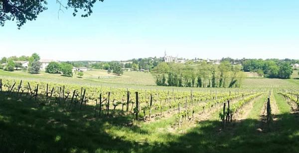

Chateau Bessan

Famille de viticulteurs à Tabenac produisant des vins et du jus de raison bio.
-
coordinateur.rice :
- Elie producteur.rice :
- Matthieu-Verdier
- Type de contrat : contrat variable
- contrat à télécharger : contrat
- Adresse : Tabenac
- Site : https://chateaubessan.fr/
- Commande : https://cagette.gourmandignes.org/contract/view/17
- produits :
- bib-5L-vin-rouge
- bordeaux-blanc-sec-2018
- bordeaux-rose-2019
- bordeaux-superieur-2012-rouge
- cadillac-2016-blanc-liquoreux
- cadillac-cotes-bordeaux-rouge-2015
- cadillac-cotes-bordeaux-rouge-2017
- cotes-bordeaux-2017-mascaret-rouge
- cuvee-excellence-2016-rouge
- magnum-bordeaux-superieur-2012-rouge
- perle-bessan-cremant-rose
- perles-bessan-cremant-blanc
Propriété située…
- vin
- jus de raisin
- alcool
- bio